Are you better than a Coin Toss?
by John Oliver and Richard Warburton
Who are we?
Why you should care
The Fundamentals
Practical Problems
Applying the Theory
define structure of the talk
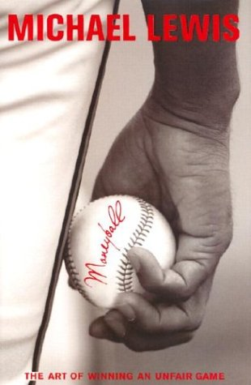
Sport - pundits are useless sheep.
Politics:
2008 and 2012 elections had predictable results.
Nate Silver combined individual poll ratings.
Dismissed by critics, data proved him right.
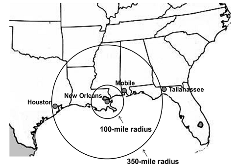
Improvement over time
meterology
hurricane
'Experts" aren't very good
Across a wide variety of industries
Big Data solves ALL KNOWN PROBLEMS
Big Data solves ALL KNOWN PROBLEMS
... helps
Validation = Tests for Data
explain validation
Part 1: Fundamentals
Talk about fundamentals, by which we mean basic statistics.
Null Hypothesis
Until proven otherwise there is no relationship between phenomena
Refuting The Null Hypothesis is to present evidence that there is a relationship
Hypothesis: the loss of my socks is due to alien burglary
Null Hypothesis: the loss of my socks is not caused by an alien burglary
When you hear "Wolf!" there is a wolf nearby
Cry "Wolf!"
Stay Quiet
Wolf Nearby
Ok
False Negative
Its really a chicken!
False Positive
Ok
False Positives vs False Negatives
FN or type I error - when the null hypothesis (H0) is true, but is rejected
Why is this important?
FP and FN not equal
It is better that ten guilty persons escape than that one innocent suffer
- William Blackstone
Innocent until proven guilty
Estate Agents would rather show people the wrong house than miss out on a sale.
Static Analysis
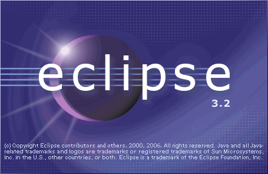
Coverity published research findings that low false positive rates are good for business.
Cost benefit Analysis
Costs a lot to jail an innocent man
Costs very little to show someone an inappropriate house
Credibility, Liberty, Morality are also costs
Choose the right measurement
There's more than one concept of accuracy
Most people think of 'accuracy'
Recall
number of true positives / number of actually true values
Proportion of true values you've found.
Precision
number of true positives / predicted true value
Proportion of your claimed truths which were true.
F Measure
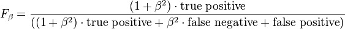
Weighted tradeoff between precision and recall.
Case Study: Memory Leaks
About ~10% of our dataset had memory leaks
Predict "never leaks memory" ~= 0.9 accuracy, but F1 = 0
Our algorithm ~= 0.9 accuracy and F1 ~= 0.9
We designed an algorithm to detect memory leaks using GC Logs.
Problem: Reliability of measurement
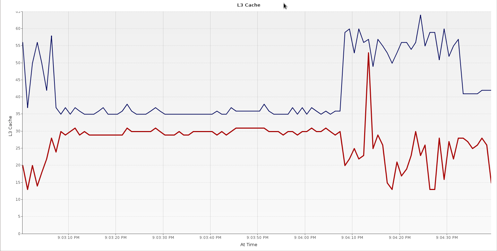
Common problem in benchmarking
Rule of thumb
If it looks like random noise, it probably is random noise.
Solution: Check your data
Low Standard Deviation
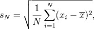
Coefficient of Variation = Standard Deviation / Mean
Formalise the rule of thumb.
Caveat: Non-normal distributons
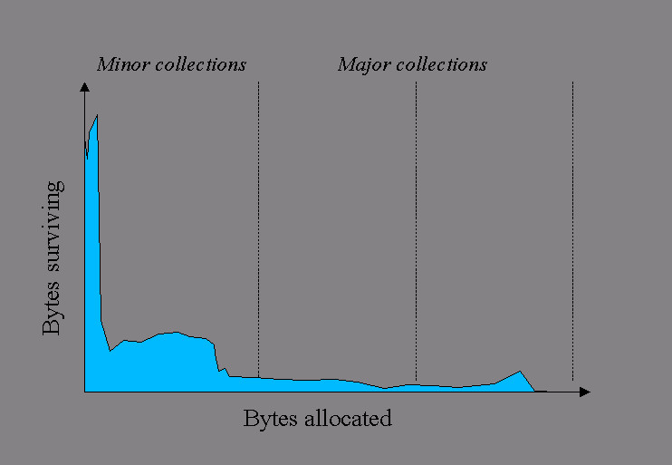
For non-normal, the standard deviation can be a terrible estimator of scale.
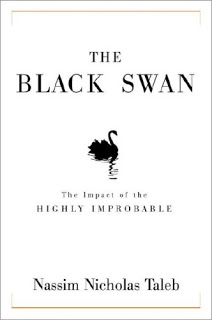
Nassim Nicholas Taleb
Median Absolute Deviation
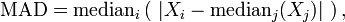
replace the use of mean with median when calculating s.d. then divide by median.
Problem: Experimental Flukes
Is your A/B test a heisen test?
Solution: P-Value
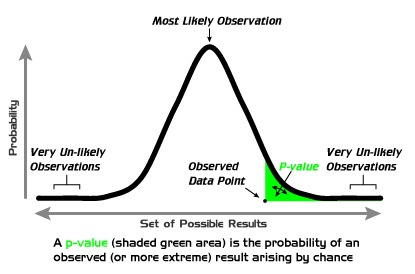
Probability that you’ve fluked your way to the result that you got.
Science Works - B****es!
Dawkins or XKCD
Practical Problems
Part 2
Talked a lot about theory - this isn't High School Maths!
I'm an expert, listen to me!
Everyone has a pet theory
Solution: Establish Goals and Hypothesis then test solutions
Don’t be afraid of failure
Problem: Code Quality
Data Scientists don't
Growth in a Time of Debt
Reinhart and Rogoff
Found that 90% debt to GDP ratio is a tipping point for econnomies
Amoung other possible errors coding mistakes were found in spreadsheets that undermined the proposal
"Rogoff and Reinhardt claimed that their fundamental conclusions were accurate, despite the errors"
The internal SRI software exception was caused during execution of a data
conversion from 64-bit floating point to 16-bit signed integer value. The
floating point number which was converted had a value greater than what could
be represented by a 16-bit signed integer. This resulted in an Operand Error.
Flight 501 Failure - Report by the Inquiry Board
Solution: Software Engineering Practices
Teach your scientists some SE.
Everyone Lies
- House
Humans a big source of input data.
Solution: Understand Biases and Design around them
Gay couples should have an equal right to get married, not just to have civil partnerships
Populus: 65% vs 27%
Marriage should continue to be defined as a life-long exclusive commitment between a man and a woman
Comres + Catholic Voices: 22% vs 70%
Leading Questions
Acquiescence Bias
Answer yes if there’s a positive connotation
Removal of Particular Advertising and Sponsorship Bans
FOR: 1045
Maintaining an Ethical Union by Reaffirming Advertising and Sponsorship Bans
FOR: 858
Student Politics - ridiculous, love referenda
Solution: phrase questions neutrally
And only have one question
Social Desirability
Poor people overestimate their income, rich people under estimate it.
Solutions
Anonymisation
Confidentiality
Randomized Response
Bogus Pipeline
Ask a man whether he had sex with a prostitute this month.
Bias towards the first answer of a question
Make sure to randomise the order of answers
What will the next crisis in Washington be?
Fight over the debt ceiling
Difficulty averting automatic cuts to the Pentagon
Failure to pass basic budget bills
All of the above
http://www.foxnews.com/politics/elections/2012/you-decide/what-will-next-crisis-washington-be
Poorly Chosen answers
Problem: Correlation doesn’t imply Causality
Post hoc ergo propter hoc
what's the real cause?
Database and network activity correlating
Performance Diagnosis: was actually a GC Problem.
What is causing what?
Solution: Domain Knowledge
use domain knowledge to disambiguate causality
WWII - Adding armour in the wrong place caused increased fatalities.
Solutions
Use domain knowledge - ask Pilots
Stratified sample sets
Measure outcomes - are planes surviving more?
Divide problems into different classes, called strata.
Be Rigorous
Good Methods
Part 3: Applying the Theory
Provide some examples of how we've applied Stats + ML at jClarity.
Correlation
A measure of the strength of dependence between two variables
Produces a measure that denotes the dependence between variables
Pearson Correlation
Err...Just look it up
(Assumes linear relationship)
Produces a measure that denotes the dependence between variables
Range Strength <0.4 Weak/No Correlation <0.7 Some Correlation >0.7 Strong Correlation
Negatives just as important - remember to normalise
Correlation Strength: 0.78453
Explain goal: Tie back source of system time
Machine Learning
Application of statistics to learn a relationship
ideas apply elsewhere
How many clusters?
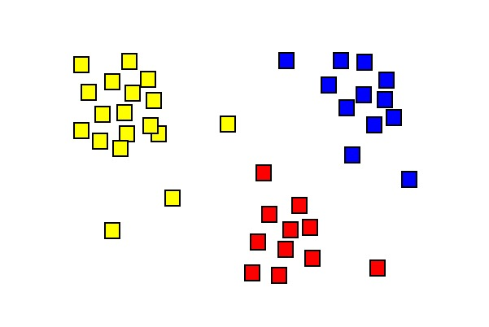
Clustering - grouping sets of similar objects
Where's the elbow?
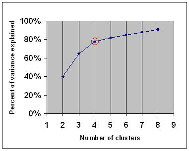
Explain Hyper Parameter Optimisation
Fitting
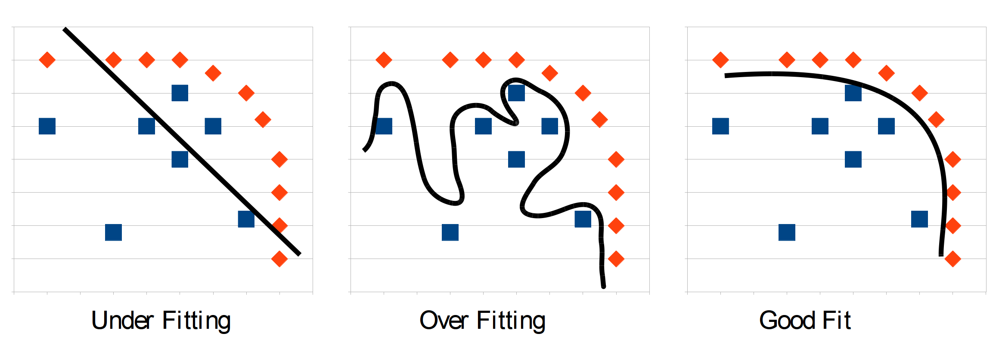
Explain validation issue for classification problems
Fitting
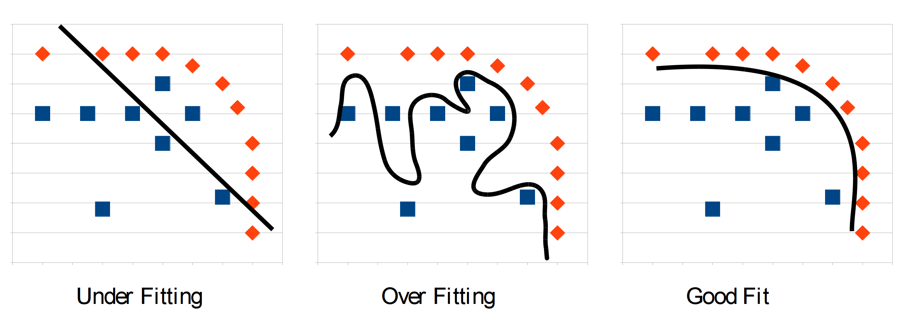
added new point
poor generalisation, but 100% on test set
Solution:
Cross Validation
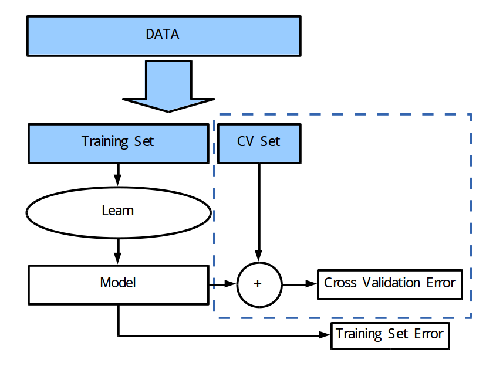
Avoid over fitting your training set
Choose cross validation data wisely
Sample cross-validation set
Self Validating
Ensemble methods - Train lots of weak classifiers and merge
self validating
Random Forest and Bagging
Divide the data into bootstrap sets
Use the rest for calculating error
Bias:
Variance:
How much is too much?
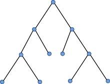
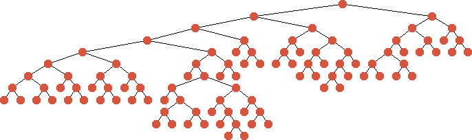
RF can be tuned to over or under fit by setting the number of nodes in a decision tree.
In our case validation error drops with training error
Divergence did happen above 2000 nodes
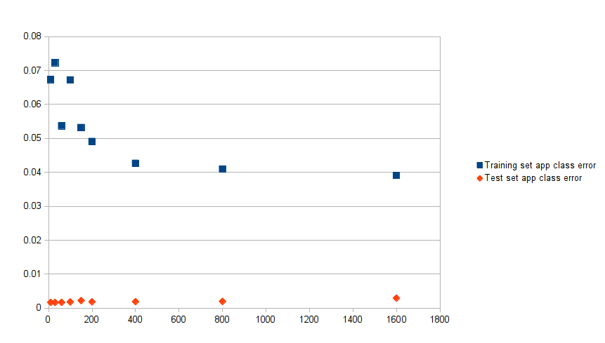
Ask the audience: what's weird?
Apply technique to number of samples. Using 64 nodes in the tree
Monitor Production Data...It changes
Does it look like the same data that you learnt with?
monitor all the things in production if possible
A/B Test new systems
Satisfaction/Profit/Traffic...
monitor validation after retraining
Common Threads
Training set errors are misleading
Cross Validation, Production Monitored Values are the ones that really matter
Visualise and compare these errors
Conclusion
Analytics are increasingly important
Wide variety of statistical and practical tips to get them right
Have fun and Best of luck!